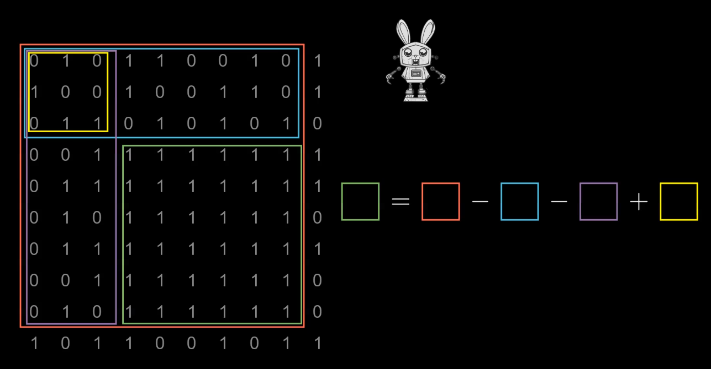

import sys
# sys.stdin — стандартный ввод, используется input()
# sys.stdout — стандартный вывод, используется print()
sys.stdin = open("input.txt", "r") # Теперь input() читает из файла, а не из консоли
sys.stdout = open("output.txt", "w") # Теперь print() пишет в файл
input() # Считает строку из input.txt без символа \n
print() # Запишет пустую строку в output.txt
sys.stdin.close() # Закрываем файлы — обязательно!
sys.stdout.close()
Математическая бесконечность
import math
infinity = math.inf # Специальное значение бесконечности
x = int(input())
x < infinity # Любое число меньше +inf
x > -infinity # Любое число больше -inf
infinity = float("inf") # Альтернативный способ получить бесконечность
from math import inf as INF
mx = -INF # Устанавливаем минимально возможное значение
for i in range(5):
x = int(input())
if x > mx: # Находим максимум
mx = x
print(mx)
Работа с системами счисления
# int() может преобразовывать строки в числа, включая разные системы счисления
x = int(4) # Просто число
x = int(6.32) # Округление вниз: 6
x = int("3") # Из строки
x = int("21", 3) # "21" в троичной => 2*3 + 1 = 7
x = int("2a", 16) # Шестнадцатеричная => 42
# Обратные функции
x = bin(10) # '0b1010'
x = oct(10) # '0o12'
x = hex(10) # '0xA'
Подробнее про итераторы
Итерируемый объект — то, что можно перебирать (список, строка, генератор).
Итератор — объект, возвращающий элементы по одному.
Итератор обязан иметь методы __iter__() и __next__().
# Перебор кортежа — простой случай
for elem in (0, 2, 4, 56):
print(elem)
# Генераторное выражение создаёт итератор
gen = (elem for elem in range(1, 10))
for elem in gen:
print(elem) # Выводятся значения, а не сам генератор!
# Генератор выдаёт элементы один раз
gen = (elem for elem in range(3))
print(next(gen)) # 0
print(next(gen)) # 1
print(next(gen)) # 2
# next(gen) вызовет StopIteration
Enumerate
lis = ["a", "b", "c"]
# enumerate возвращает пары (индекс, значение)
for e in enumerate(lis):
print(e)
# Сдвиг индекса начиная с 1
gen = (elem for elem in range(3))
for e in enumerate(gen, 1):
print(e)
st = "Apple"
for e in enumerate(st):
print(e) # Индекс + буква
Методы списков
lis = [1, 2, 3]
lis.append(4) # Добавить элемент в конец
lis.extend([5, 6]) # Добавить элементы другого списка
lis.pop() # Удаляет и возвращает последний элемент
lis.pop(2) # Удаляет по индексу
print(lis.pop()) # Выводит удалённый элемент
lis.insert(2, 3) # Вставить 3 на позицию 2
lis.sort() # Сортирует список
lis.reverse() # Переворачивает список
lis = [1, 2, 3, 2, 4, 2]
print(lis.count(2)) # Сколько раз встречается число 2
lis.clear() # Полная очистка списка
Методы строк
st = "ab ab ba ba"
print(st.split()) # Разбивает по пробелам
st = "43-2"
print(st.split("-")) # Разбивает по '-'
st = "abBA"
print(st.upper()) # Верхний регистр
print(st.lower()) # Нижний регистр
print(st.isupper()) # Проверка регистра
print(st.islower())
print(st.isalpha()) # Только буквы?
print(st.isdigit()) # Только цифры?
print(st.isalnum()) # Буквы + цифры?
st = "aabBaaabba"
print(st.count("ab")) # Подсчёт подстроки
print(st.find("ab")) # Первое вхождение или -1
print(st.rfind("ab")) # Последнее вхождение
# Замены
st = st.replace("ab", "ba") # Все вхождения
st = st.replace("ba", "ab", 2) # Только первые 2
st = st.replace("ab", "") # Удаление подстроки
st = " AB \n"
print(st.strip()) # Удаление пробелов и \n по краям
print(st.lstrip()) # Слева
print(st.rstrip()) # Справа
print(ord("a")) # Код символа
print(chr(12)) # Символ по коду
Локальное и глобальное пространство имён
# Пример 1: используем переменную a из глобальной области
def f():
print(a)
a = 5
f() # 5
print(a) # 5
# Пример 2: локальная переменная перекрывает глобальную
def f():
a = 1
print(a) # Локальная
a = 5
f() # 1
print(a) # Глобальная: 5
# Пример 3: ошибка — переменная a используется до присвоения
def f():
print(a) # Ошибка: Python считает, что a — локальная, т.к. есть присвоение ниже
a = 1 # Это делает a локальной переменной
a = 5
f() # Ошибка UnboundLocalError
print(a)
# Функции можно передавать, сохранять, хранить в списках
def f1(a, b):
return a + b
def f2(a, b):
return a - b
def f3(a, b):
return a * b
lis = [f1, f2, f3]
print(lis[1](3, 4)) # f2(3,4) => -1
Функция zip
a = [1, 2, 3]
b = ["apple", "pineapple", "pickle"]
# zip объединяет элементы попарно
for el in zip(a, b):
print(el)
names = ['Алиса', 'Боб', 'Чарли']
ages = [25, 30, 35]
zipped = zip(names, ages)
print(list(zipped)) # [('Алиса',25), ('Боб',30), ...]
dic = dict(zip(names, ages)) # Создание словаря
print(dic)
Стек, Очередь, Дек
Стек - структура данных, работающая по принципу «последним пришёл — первым ушёл» (LIFO)
Мы пишем стек как обёртку списка:
class Stack:
def __init__(self):
self.data = [] #Тут мы будем хранить всё
def back(self):
return self.data[-1] #Возвращаем последний элемент
def push(self, value):
self.data.append(value) #Добавляем элемент в конец
return self #Возвращаем себя (необязательный элемент)
def pop(self):
return self.data.pop() #Удаляем и возвращаем последний элемент
@property
def size(self): #Property - удобный способ оформлять функции как переменные
return len(self.data)
def __len__(self):
return self.size #Если писать с property, можно писать без скобок
def clear(self):
self.data.clear()
Очередь - реализация на двух стеках
У нас есть 2 стека - input, output
output - [ - | - ] - input
Новые элементы добавляем в input
output - [ - | 1 ] - input
output - [ - | 1 2 ] - input
output - [ - | 1 2 3 ] - input
Берём элементы из output
Сейчас output пуст, так что надо перенести все элементы из input
Берём последный из input и кладём в output
output - [ 3 | 1 2 ] - input
output - [ 2 3 | 1 ] - input
output - [ 1 2 3 | - ] - input
Теперь можно брать последний элемент из output
output - [ 2 3 | - ] - input
! Мы не кладём ничего в output, пока он не пуст !
Новые элементы кладём в input
В качестве упражнения, определите какие операции дали такие результаты:
output - [ 4 5 6 7 | - ] - input Перемещаем перед следующим забором
output - [ 5 6 7 | - ] - input Забираем 4
class Queue:
def __init__(self):
self.input = [] #Вместо стеков используем чистые списки
self.output = []
def put(self, n):
self.input.append(n) #Кладём в input
def move(self): #Балансировка
if(len(self.output) == 0): #Изменяем только если output пуст!
self.output = self.input[::-1] #Представим что мы переложили стеки
self.input = [] #Соответственно, в input ничего не осталось
def get(self): #Вытаскиваем элемент из очереди
self.move() #Гарантируем, что output будет
return self.output.pop() #Берем сразу из стека output
def front(self): #Смотрим элемент из очереди
self.move() #Гарантируем, что output будет
return self.output[-1] #Берем сразу из стека output
@property
def size(self):
return len(self.input) + len(self.output) #Размер - сумма размеров стеков
def clear(self):
self.input = []
self.output = []
Дек, deque (double-ended queue) - как очередь, только можно класть и брать с обоих сторон
from collections import deque
#Используем встроенный модуль
d = deque([1, 2, 3])
d.append(4) #Добавляем напрямую
d.popleft() #Забираем с другой стороны
#Эти 2 функции позволяют использовать дек как обычную очередь
d.appendleft(0) #Добавляем С обратной стороны
d.pop() #Забираем с обычной стороны
Префиксные и суффиксные алгоритмы
Префиксные алгоритмы — это вычисления слева направо, где для каждого индекса рассчитывается значение на основе всех элементов слева.
Примеры: префиксная сумма, префиксный минимум, максимум, произведение и т.д.
Суффиксные алгоритмы — то же самое, но справа налево.
Используются, когда нужно знать влияние «хвоста» массива после позиции.
Зачем нужны?
Быстрые вычисления на подмассивах
Подготовка данных для алгоритмов «с двух сторон»
Решение задач на интервалы за O(1) после препроцессинга
Префиксная сумма
# Префиксная сумма: prefix[i] = a[0] + ... + a[i]
a = [3, 1, 4, 1, 5]
prefix = [0] * len(a)
current = 0
for i, x in enumerate(a):
current += x
prefix[i] = current
print(prefix) # [3, 4, 8, 9, 14]
Суффиксная сумма
# Суффиксная сумма: suffix[i] = a[i] + ... + a[n-1]
a = [3, 1, 4, 1, 5]
n = len(a)
suffix = [0] * n
current = 0
for i in range(n - 1, -1, -1):
current += a[i]
suffix[i] = current
print(suffix) # [14, 11, 10, 6, 5]
Префиксный минимум
# Префиксный минимум: min(a[0..i])
a = [7, 3, 5, 2, 9]
prefix_min = [0] * len(a)
m = float('inf')
for i, x in enumerate(a):
m = min(m, x)
prefix_min[i] = m
print(prefix_min) # [7, 3, 3, 2, 2]
Суффиксный максимум
# Суффиксный максимум: max(a[i..n-1])
a = [7, 3, 10, 2, 9]
n = len(a)
suffix_max = [0] * n
m = float('-inf')
for i in range(n - 1, -1, -1):
m = max(m, a[i])
suffix_max[i] = m
print(suffix_max) # [10, 10, 10, 9, 9]
Задачи
Задача 1. Сумма на подотрезке
Дан массив и много запросов вида (l, r). Нужно быстро находить сумму элементов на этом отрезке.
# Используем prefix: sum(l..r) = prefix[r] - prefix[l-1]
a = [3, 1, 4, 1, 5]
prefix = [0] * (len(a) + 1)
# Строим prefix так, что prefix[i] — сумма первых i элементов
for i in range(1, len(prefix)):
prefix[i] = prefix[i-1] + a[i-1]
def query(l, r):
return prefix[r+1] - prefix[l]
print(query(1, 3)) # 1+4+1 = 6
Задача 2. Найти для каждого i, минимум слева и справа
Полезно в задачах на «зажатые» интервалы и выбор лучшей позиции.
# Для каждого i: минимальный элемент слева и справа
a = [5, 2, 7, 1, 3]
n = len(a)
prefix_min = [0] * n
suffix_min = [0] * n
# Строим prefix_min
m = float('inf')
for i in range(n):
m = min(m, a[i])
prefix_min[i] = m
# Строим suffix_min
m = float('inf')
for i in range(n-1, -1, -1):
m = min(m, a[i])
suffix_min[i] = m
print(prefix_min) # [5, 2, 2, 1, 1]
print(suffix_min) # [1, 1, 1, 1, 3]
Задача 3. Сумма подматрицы (2D префиксные суммы)
Дана матрица и множество запросов: найти сумму элементов в прямоугольнике
с углами (x1, y1) и (x2, y2).
Используем двумерный массив префиксных сумм.
# 2D префиксные суммы
# prefix[i][j] = сумма всех элементов в прямоугольнике от (0,0) до (i-1, j-1)
matrix = [
[3, 1, 4],
[1, 5, 9],
[2, 6, 5]
]
n = len(matrix)
m = len(matrix[0])
# Создаем prefix с запасом (n+1)*(m+1)
prefix = [[0]*(m+1) for _ in range(n+1)]
# Строим 2D префиксные суммы
for i in range(1, n+1):
for j in range(1, m+1):
prefix[i][j] = (matrix[i-1][j-1]
+ prefix[i-1][j]
+ prefix[i][j-1]
- prefix[i-1][j-1])
#Матрица префиксных сумм:
# 0 0 0 0
# 0 3 4 8
# 0 4 10 23
# 0 6 18 36
# Функция для получения суммы подматрицы
# x1, y1 — верхний левый угол
# x2, y2 — нижний правый угол
def query(x1, y1, x2, y2):
return (prefix[x2+1][y2+1] #Берём от (0, 0) до (x2, x1)
- prefix[x1][y2+1] #Вычитаем до (x1, x2)
- prefix[x2+1][y1] #Вычитаем до (x2, y1)
+ prefix[x1][y1]) #Возвращаем до (x1, y1): мы вычли дважды
# Пример: сумма подматрицы от (0,1) до (2,2)
print(query(0, 1, 2, 2)) # 1+4 + 5+9 + 6+5 = 30

Алгоритмы с двумя указателями
Метод двух указателей — это приём, при котором мы используем два индекса (обычно left и right), которые двигаются навстречу друг другу или в одном направлении.
Этот метод позволяет решать многие задачи за линейное время O(n), избегая вложенных циклов.
1. Поиск пары i, j в отсортированном списке, такой что a[i] + a[j] = k
Так как список упорядочен, можно поставить один указатель в начало, второй — в конец. Если сумма больше k — двигаем правый указатель, если меньше — левый.
a = [1, 3, 4, 5, 7, 10]
k = 9
l, r = 0, len(a) - 1 #Ставим указатели на разные концы
while l < r:
s = a[l] + a[r] #То, что мы имеем
if s == k:
print(l, r)
break
elif s > k: #Если перебор - сдвигаем правую границу (она перейдёт на меньший элемент)
r -= 1
else: #Если недобор - сдвигаем левую границу (она перейдёт на больший элемент)
l += 1
2. Удаление повторов в отсортированном списке (сжатие списка)
Используем два указателя: один читает элементы, другой записывает уникальные.
a = [1, 1, 2, 2, 2, 3, 4, 4]
w = 1 # Куда писать
for r in range(1, len(a)): #r - куда смотреть
if a[r] != a[r - 1]: #Если мы на переходе: текущий элемент не равен предыдущему
a[w] = a[r] #Ставим текущий на место
w += 1 # Изменяем, куда надо ставить
print(a[:w]) # [1, 2, 3, 4]
3. Разделение списка: слева чётные, справа нечётные
Два указателя идут навстречу: левый ищет нечётное, правый — чётное, меняем их.
a = [3, 2, 5, 6, 7, 8]
l, r = 0, len(a) - 1
while l < r: # Пока указатели не столкнутся
if a[l] % 2 == 0: #Если левое чётное - так и надо
l += 1
elif a[r] % 2 == 1: Если левое нечётное - ищем четное справа
r -= 1
else:
a[l], a[r] = a[r], a[l] #Теперь слева нечетное, справа чётное. Меняем местами.
print(a)
4. Задача с перегородками (максимальная вместимость)
Задача Container With Most Water (Перегородки)
Дан список целых чисел h, где каждый элемент — это высота вертикальной перегородки.
Каждая перегородка стоит на позиции, соответствующей её индексу.
Нужно выбрать две разные перегородки с индексами x1 и x2, между которыми можно получить контейнер максимального объёма.
Указатели стоят по краям и двигаются к центру. Объём определяется по формуле:
V = min(h1, h2) * (x2 - x1 - 1)
Требуется найти такой максимум V среди всех возможных пар перегородок.
h = [1, 8, 6, 2, 5, 4, 8, 3, 7]
l, r = 0, len(h) - 1
best = 0
while l < r: #Пока не встретимся
V = min(h[l], h[r]) * (r - l - 1) #Рассчитываем текущий объем
best = max(best, V) #Обновляем ответ
if h[l] < h[r]: #Если левая перегородка ниже правой, попробуем найти повыше
l += 1
else: #Так же с правой
r -= 1
print(best)
5. Максимальная подстрока без повторяющихся символов
Два указателя формируют "скользящее окно".
Расширяем правый указатель, пока нет повторов.
При повторе двигаем левый, удаляя символы из окна.
s = "abacaba"
used = set() #Тут храним текущие символы
l = 0
best = 0
for r in range(len(s)): #Фиксируем правый
while s[r] in used: #Если новый символ уже использовался
used.remove(s[l]) #Двигаем левую границу, пока не выбросим старый символ пересекающийся с новым
l += 1
used.add(s[r])
best = max(best, r - l + 1)
print(best)
6. Максимальная подстрока, содержащая не более 10 букв 's'
Аналогично окну без повторов, но теперь ограничение — число букв 's'.
Если их становится больше 10, сдвигаем левый указатель.
s = "ssasbsccsssdsss"
l = 0
count_s = 0
best = 0
for r in range(len(s)):
if s[r] == 's':
count_s += 1
while count_s > 10:
if s[l] == 's':
count_s -= 1
l += 1
best = max(best, r - l + 1)
print(best)
Жадные алгоритмы — конспект лекции
1. Определение
Жадный алгоритм — это алгоритм, который на каждом шаге
делает локально оптимальный выбор,
не пересматривая его в дальнейшем.
Основной принцип:
«Лучшее сейчас → оптимум в конце»
# Общая схема жадного алгоритма
while задача не решена:
выбрать лучший вариант на текущем шаге
применить его
2. Свойства жадных алгоритмов
Простая логика
Высокая скорость работы
Часто используются сортировки
Работают не для всех задач
3. Условия применимости
Жадный выбор — оптимальный выбор можно сделать сразу
Оптимальная подструктура — задача разбивается на подзадачи
4. Классические задачи
Задача 1. Максимальное количество непересекающихся отрезков
Дано n отрезков [lᵢ, rᵢ].
Требуется выбрать максимальное количество отрезков,
не имеющих общих точек.
Жадная стратегия: выбирать отрезки с минимальным правым концом.
def max_non_intersecting_segments(segments):
# сортировка по правому концу
segments.sort(key=lambda x: x[1])
count = 0
last_end = -10**18
for l, r in segments:
if l >= last_end:
count += 1
last_end = r
return count
segments = [(1, 3), (2, 5), (4, 7), (6, 9)]
print(max_non_intersecting_segments(segments))
Задача 2. Размен суммы минимальным числом монет
Даны номиналы монет и сумма S.
Каждого номинала можно использовать неограниченно.